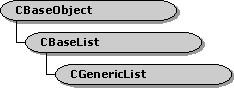

description: The CGenericList class template that implements a type-specific list. For more information, see CBaseList. ms.assetid: 69067530-3a7d-4731-8ac6-9d02dbba8440 title: CGenericList class (Wxlist.h) ms.topic: reference ms.date: 4/26/2023 topic_type:
[The feature associated with this page, DirectShow, is a legacy feature. It has been superseded by MediaPlayer, IMFMediaEngine, and Audio/Video Capture in Media Foundation. Those features have been optimized for Windows 10 and Windows 11. Microsoft strongly recommends that new code use MediaPlayer, IMFMediaEngine and Audio/Video Capture in Media Foundation instead of DirectShow, when possible. Microsoft suggests that existing code that uses the legacy APIs be rewritten to use the new APIs if possible.]

The CGenericList class template that implements a type-specific list. For more information, see CBaseList.
To use this template, declare a variable of type CGenericList with a template argument that defines the type of object in the list. For example, the following statement declares a list of CBaseFilter objects:
CGenericList<CBaseFilter> myFilterList("Filters");
For convenience, Wxlist.h defines the following list types:
typedef CGenericList<CBaseObject> CBaseObjectList;
typedef CGenericList<IUnknown> CBaseInterfaceList;
| Public Methods | Description |
|---|---|
| CGenericList | Constructor method. |
| ~CGenericList | Destructor method. |
| GetHeadPosition | Retrieves the position of the first item in the list. |
| GetTailPosition | Retrieves the position of the last item of the list. |
| GetCount | Retrieves the number of items in the list. |
| GetNext | Retrieves the item at the specified position, and advances the position. |
| Get | Retrieves the item at the specified position. |
| GetHead | Retrieves the item at the head of the list. |
| RemoveHead | Removes the first item in the list. |
| RemoveTail | Removes the last item in the list. |
| Remove | Removes the item at the specified position. |
| AddBefore | Inserts an item or list before the specified position. |
| AddAfter | Inserts an item or list after the specified position. |
| AddHead | Adds an item or list to the front of the list. |
| AddTail | Appends an item or list to the end of the list. |
| Find | Retrieves the first position that holds the specified item. |
| Requirement | Value |
|---|---|
| Header | Wxlist.h (include Streams.h) |
| Library | Strmbase.lib (retail builds); Strmbasd.lib (debug builds) |